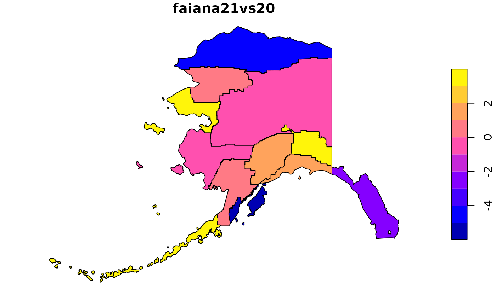

Generator from American Community Survey (ACS) Geodatabases
Jose Samos (jsamos@ugr.es)
2023-11-05
Source:vignettes/geogenr.Rmd
geogenr.RmdIntroduction
The American
Community Survey (ACS) offers geodatabases with geographic
information and associated data of interest to researchers in the area.
The goal of geogenr is to facilitate access to this
information through functions that allow us to select the geodatabases
that interest us, download them, access the information they contain,
filter it and export it in various formats so that we can process it
with other tools if required.
Other packages are available that are very useful to access the same
data, such as tidycensus,
which works in an integrated way with tigris.
The main characteristics of geogenr that distinguish it
from other proposals are the following:
it works locally, once available geodatabases are downloaded (can be downloaded using the package);
supports access at the level of group of variables integrated in a layer, instead of at the level of variable or vector of variables;
decomposes ACS composite variables into structured fields;
allows to directly integrate variables of several years;
and It allows us to export the data to other formats.
The rest of this document is structured as follows: First, the starting data are presented. Then, an illustrative example of how the package works is developed. Finally, the document ends with conclusions.
American Community Survey 5-Year Estimates
The package is based on the geodatabases available on the TIGER/Line with Selected Demographic and Economic Data web page. For each year (as of 2012) a list of geodatabases appears under two sections:
Legal and Administrative Areas;
Statistical Areas.
These geodatabases bring together geography from the TIGER/Line Shapefiles and data from the American Community Survey (ACS) 5-year estimates.
Each ACS geodatabase is structured in layers: a geographic layer, a metadata layer, and the rest are data layers. The data layers have a matrix form, the rows are indexed by instances of the geographic layer, the columns by variables defined in the metadata layer, the cells are numeric values. Here we have an example:
GEOID B01001e1 B01001m1 B01001e2 B01001m2 B01001e3 B01001m3 B01001e4 B01001m4 ...
16000US0100100 218 165 92 114 10 16 18 30
16000US0100124 2582 24 1313 98 45 37 14 19
16000US0100460 4374 24 1963 158 144 76 105 68
16000US0100484 641 159 326 89 10 17 16 11
16000US0100676 295 102 143 55 7 11 14 17
16000US0100820 32878 57 16236 453 1159 257 1151 209
...
Some of the defined variables are shown below.
Short_Name Full_Name
B01001e1 SEX BY AGE: Total: Total Population -- (Estimate)
B01001m1 SEX BY AGE: Total: Total Population -- (Margin of Error)
B01001e2 SEX BY AGE: Male: Total Population -- (Estimate)
B01001m2 SEX BY AGE: Male: Total Population -- (Margin of Error)
B01001e3 SEX BY AGE: Male: Under 5 years: Total Population -- (Estimate)
B01001m3 SEX BY AGE: Male: Under 5 years: Total Population -- (Margin of Error)
B01001e4 SEX BY AGE: Male: 5 to 9 years: Total Population -- (Estimate)
B01001m4 SEX BY AGE: Male: 5 to 9 years: Total Population -- (Margin of Error)
...
Each variable (Short_Name) corresponds to combinations
of various field values separated by a separator (:),
forming a string (Full_Name). The field name of each value
is not available but the topics included are detailed on the web page Subjects
Included in the Survey. There are tens of thousands of variables of
these characteristics that, in addition to the metadata layer, can be
found on the TIGER/Line
with Selected Demographic and Economic Data Record Layouts web page.
For each combination of values, one variable associated with the
estimate and another with the margin of error are
defined. Within each layer, variables can be considered in groups,
defined by the first part of the Full Name (for example
UNWEIGHTED SAMPLE HOUSING UNITS and
SEX BY AGE).
A module of geogenr package analyses the components of
Full_name, structuring them in fields; and it allows access
to variables in groups.
An illustrative example
To work with this data with the geogenr package we
distinguish three phases:
obtaining the data,
data selection,
and generation of results,
which are developed below.
Once the result structure is generated, we can export it or define queries on it.
Obtaining the data
The data is available in the form of a geodatabase. One geodatabase for each area in each of the two area groups.
In this example, first, we select and download the ACS geodatabases using the functions offered by the package. When we have them in the same folder (they can be distributed in subfolders), we can access the information they contain to select the one that interests us.
We create an object of class acs_5yr, indicating a
folder where we will download the geodatabases.
library(geogenr)
dir <- system.file("extdata/acs_5yr", package = "geogenr")
ac <- acs_5yr(dir)We can query the available geodatabases by group, area, subject and year using the methods offered by the object.
ac |>
get_area_groups()
#> [1] "Legal and Administrative Areas" "Statistical Areas"
ac |>
get_areas(group = "Legal and Administrative Areas")
#> [1] "American Indian/Alaska Native/Native Hawaiian Area"
#> [2] "Alaska Native Regional Corporation"
#> [3] "Congressional District (116th Congress)"
#> [4] "County"
#> [5] "Place"
#> [6] "Elementary School District"
#> [7] "Secondary School District"
#> [8] "Unified School District"
#> [9] "State"
#> [10] "State Legislative Districts Upper Chamber"
#> [11] "State Legislative Districts Lower Chamber"
#> [12] "Code Tabulation Area"
ac |>
get_area_years(area = "Alaska Native Regional Corporation")
#> [1] "2013" "2014" "2015" "2016" "2017" "2018" "2019" "2020" "2021"Once we decide the area to work with, we download the files if they are not already downloaded. There are also functions available to consult previously downloaded data.
ac <- ac |>
select_area_files("Alaska Native Regional Corporation", 2020:2021)
files <- ac |>
download_selected_files(unzip = FALSE)#> [1] TRUE TRUEThe data is downloaded to the working folder associated with the object. We can indicate that they are classified by year or by area. We can also indicate that it will be automatically unzipped once downloaded. In this case they are explicitly unzipped.
files <- ac |>
unzip_files()With these operations we already have the data available locally.
Data selection
Once unzipped, we can consult the available areas and years.
ac |>
get_available_areas()
#> [1] "Alaska Native Regional Corporation"
ac |>
get_available_area_years(area = "Alaska Native Regional Corporation")
#> [1] "2020" "2021"For each area we can query the topics of the available reports.
ac |>
get_available_area_topics("Alaska Native Regional Corporation")
#> [1] "X01 Age And Sex" "X02 Race"
#> [3] "X03 Hispanic Or Latino Origin" "X04 Ancestry"
#> [5] "X05 Foreign Born Citizenship" "X06 Place Of Birth"
#> [7] "X07 Migration" "X08 Commuting"
#> [9] "X09 Children Household Relationship" "X10 Grandparents Grandchildren"
#> [11] "X11 Household Family Subfamilies" "X12 Marital Status And History"
#> [13] "X13 Fertility" "X14 School Enrollment"
#> [15] "X15 Educational Attainment" "X16 Language Spoken At Home"
#> [17] "X17 Poverty" "X18 Disability"
#> [19] "X19 Income" "X20 Earnings"
#> [21] "X21 Veteran Status" "X22 Food Stamps"
#> [23] "X23 Employment Status" "X24 Industry Occupation"
#> [25] "X25 Housing Characteristics" "X26 Group Quarters"
#> [27] "X27 Health Insurance" "X28 Computer And Internet Use"
#> [29] "X99 Imputation"We can select one or more topics to obtain the reports they
contain.To select them, we create an object of class
acs_5yr_topic. We can also select the years for which
reports are included; by default all available years are considered.
act <- ac |>
as_acs_5yr_topic("Alaska Native Regional Corporation",
topic = "X01 Age And Sex")Once a topic has been selected, we can consult the available reports or subreports.
act |>
get_report_names()
#> [1] "B01001-Sex By Age" "B01002-Median Age By Sex"
#> [3] "B01003-Total Population"We can focus on a report or subreport, we can also work with all the reports contained in the topic.
In this case we are going to work with the entire topic.
Generation of results
Once we have obtained a group of reports, we can obtain the associated data in various formats.
acs_5yr_geo class format
In this format, three layers are defined:
-
datawith geographical information and and the names and values of the variables for each instance, -
metadatawith the description of the variables, -
originwith the metadata about the origin of the data.
geo <- act |>
as_acs_5yr_geo()This format allows us to perform simple queries using the metadata and the geographic layer.
We obtain and consult the content of the metadata: structured description of the variables.
metadata <- geo |>
get_metadata()
metadata
#> # A tibble: 1,436 × 12
#> variable year Short_Name Full_Name report subreport report_var report_desc
#> <chr> <chr> <chr> <chr> <chr> <chr> <int> <chr>
#> 1 V0001 2020 B01001Ae1 Sex By Age… B01001 A 1 Sex By Age…
#> 2 V0002 2020 B01001Ae10 Sex By Age… B01001 A 10 Sex By Age…
#> 3 V0003 2020 B01001Ae11 Sex By Age… B01001 A 11 Sex By Age…
#> 4 V0004 2020 B01001Ae12 Sex By Age… B01001 A 12 Sex By Age…
#> 5 V0005 2020 B01001Ae13 Sex By Age… B01001 A 13 Sex By Age…
#> 6 V0006 2020 B01001Ae14 Sex By Age… B01001 A 14 Sex By Age…
#> 7 V0007 2020 B01001Ae15 Sex By Age… B01001 A 15 Sex By Age…
#> 8 V0008 2020 B01001Ae16 Sex By Age… B01001 A 16 Sex By Age…
#> 9 V0009 2020 B01001Ae17 Sex By Age… B01001 A 17 Sex By Age…
#> 10 V0010 2020 B01001Ae18 Sex By Age… B01001 A 18 Sex By Age…
#> # ℹ 1,426 more rows
#> # ℹ 4 more variables: measure <chr>, item1 <chr>, item2 <chr>, group <chr>We filter the metadata using the functions of the dplyr
package.
metadata <-
dplyr::filter(
metadata,
item2 == "Female" &
group == "People Who Are American Indian And Alaska Native Alone" &
measure == "estimate"
)We obtain a new object whose data corresponds to the metadata that we have obtained as a result of the selection operations.
geo2 <- geo |>
set_metadata(metadata)
geo2 |>
get_metadata()
#> # A tibble: 2 × 12
#> variable year Short_Name Full_Name report subreport report_var report_desc
#> <chr> <chr> <chr> <chr> <chr> <chr> <int> <chr>
#> 1 V0671 2020 B01002Ce3 Median Age … B01002 C 3 Median Age…
#> 2 V1389 2021 B01002Ce3 Median Age … B01002 C 3 Median Age…
#> # ℹ 4 more variables: measure <chr>, item1 <chr>, item2 <chr>, group <chr>We work with the new object, for example, by defining a new variable and graphing it using the associated geographic data.
geo_layer <- geo2 |>
get_geo_layer()
geo_layer$faiana21vs20 <- 100 * (geo_layer$V1389 - geo_layer$V0671) / geo_layer$V0671
plot(sf::st_shift_longitude(geo_layer[, "faiana21vs20"]))
Additionally, we can export any of these objects in
GeoPackage format to use other query tools, such as
QGIS.
dir <- tempdir()
file <- geo |>
as_GeoPackage(dir)
sf::st_layers(file)
#> Driver: GPKG
#> Available layers:
#> layer_name geometry_type features fields crs_name
#> 1 data Multi Polygon 12 1453 NAD83
#> 2 metadata NA 1436 12 <NA>
#> 3 origin NA 2 6 <NA>
rolap package objects
We can export reports from a theme as flat_table or
star_database objects from the rolap
package, which allow us to enrich them with additional information or
work directly with OLAP tools.
We are going to export them as an object of the
star_database class.
st <- act |>
as_star_database()Below are the tables that make up the star ROLAP design obtained.
st_dm <- st |>
rolap::as_dm_class(pk_facts = FALSE)
st_dm |>
dm::dm_draw(rankdir = "LR", view_type = "all")We also show the number of instances of each table.
l_db <- st |>
rolap::as_tibble_list()
names <- sort(names(l_db))
for (name in names){
cat(sprintf("name: %s, %d rows\n", name, nrow(l_db[[name]])))
}
#> name: anrc, 8572 rows
#> name: dim_what, 359 rows
#> name: dim_when, 2 rows
#> name: dim_where, 12 rowsWe can also export it to any RDBMS.
Conclusions
The American Community Survey (ACS) offers geodatabases with geographic information and associated data of interest to researchers in the area. These data can be accessed through various alternatives in which we must indicate the year and variable names. Due to the large number of variables and their structure, this operation is not easy.
The geogenr package offers an alternative that allows us
to download the geodatabases that are considered necessary and access
the variables by selecting data layers and logical groups of variables.
Additionally, it allows us to obtain data in various formats to consult
them directly or use other tools.